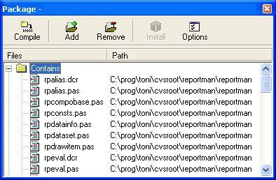

Download the components from sourceforge and unpack it to a directory:
http://sourceforge.net/projects/reportman
| Version | Packages | Description |
| Kylix 2 | rppack_del.dpk | Base package, non-visual, platform independent |
| rppackv_del.dpk | Visual CLX package, for cross platform development | |
| rppackvcl_del.dpk | VCL package can be used only in Windows | |
| rppackdesign_del.dpk | Visual CLX interface to Report Manager Designer |
You must install the packages in the correct order.
In Delphi IDE select Open option of file menu, then select .dpk package files, click the install button.
If you alter rpconf.inc, you can remove the dependeces of the disabled options, for example if you disable ADO support you can remove adortl dependence.

To compile your projetcs must add the report manager components directory to the library path.
If you compile with runtime packages you must include the .bpl files generated with your application (just like other Borland packages)